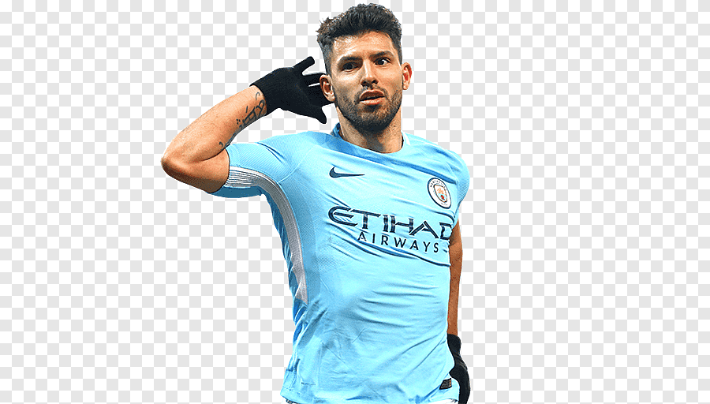
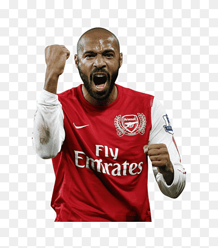
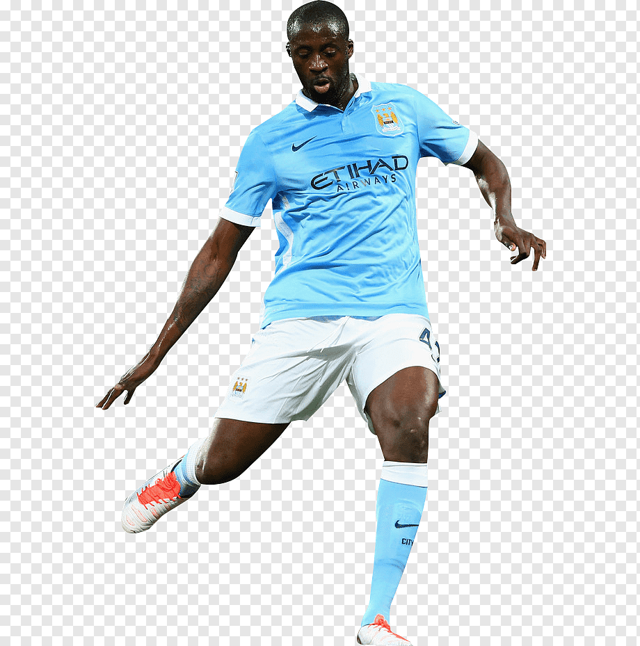
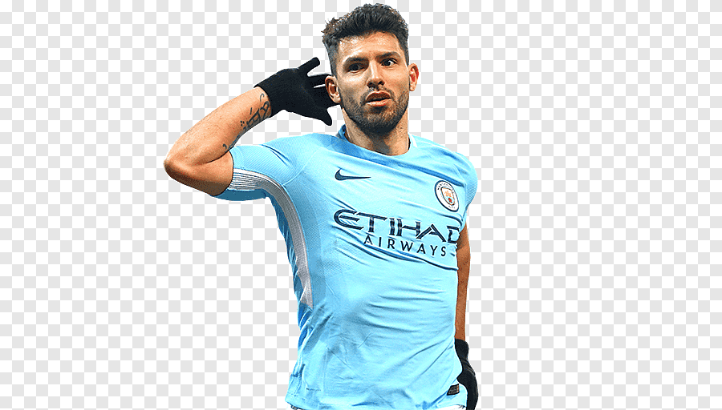
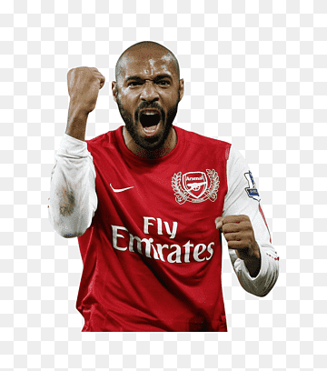
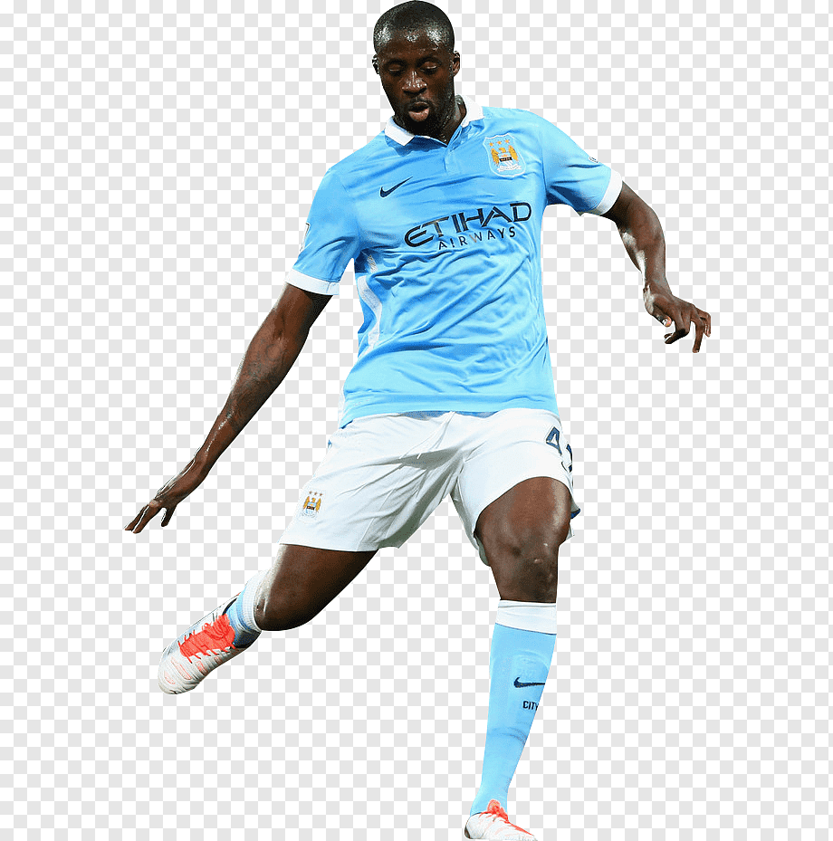
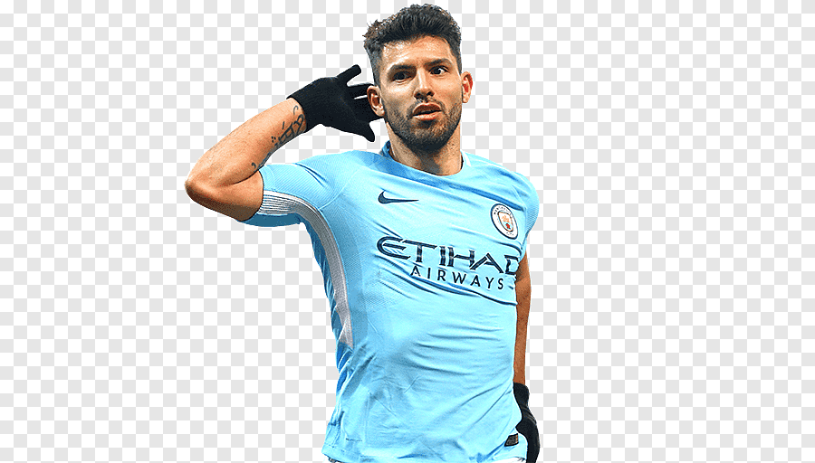
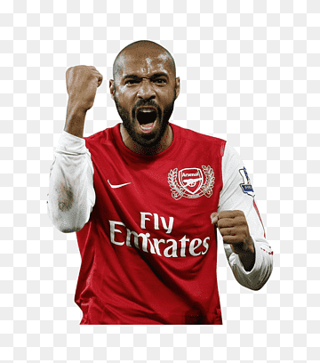
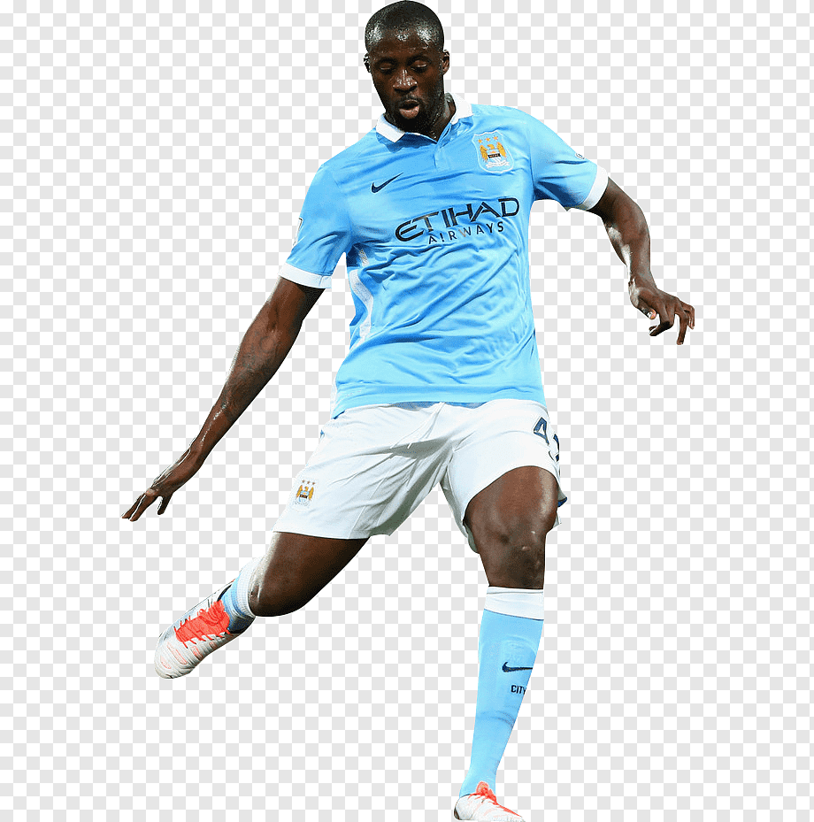
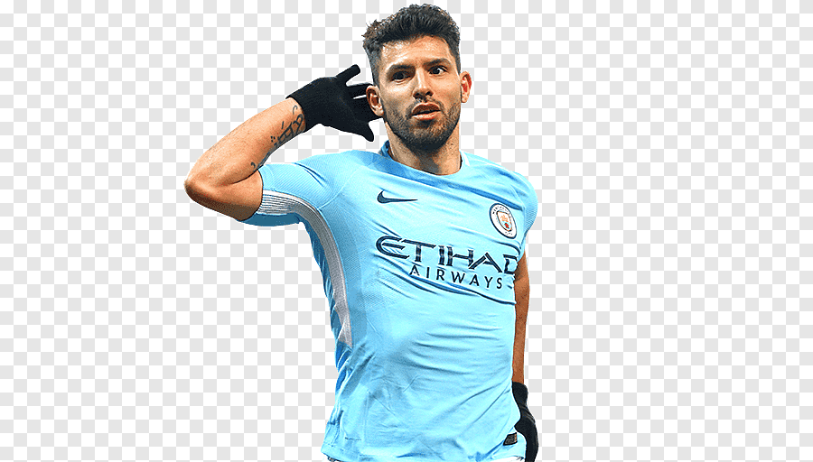
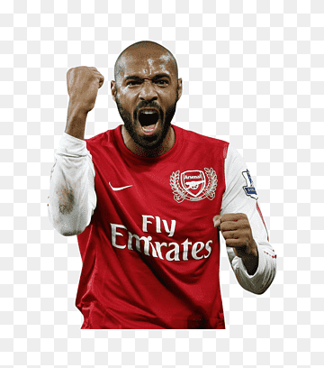
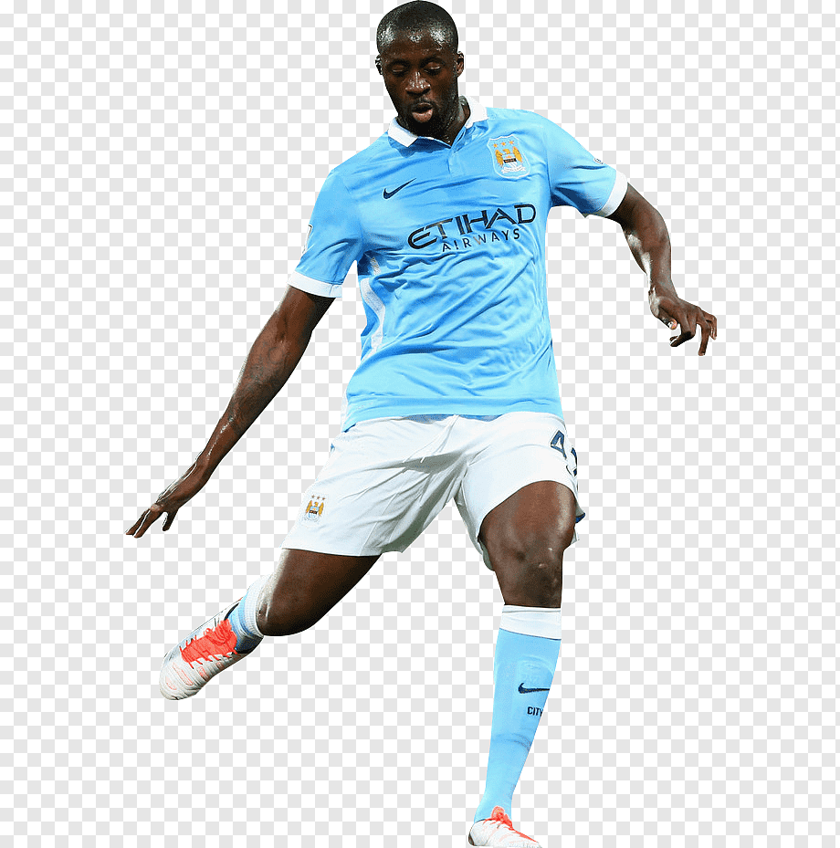
This website is designed for new Fantasy Premier League (FPL) players and football fans who want to learn how the game works and explore some of the most exciting moments from FPL history. At FPL Zone, we make it easy for beginners to understand the rules, create their first team, and discover what makes FPL such a fun and popular game among football fans around the world.
How to Play (Rules) — A beginner-friendly guide that explains how to build your team, score points, and use special features like chips and transfers.
Biggest Surprises in FPL History — A fun look back at shocking moments and unexpected star players from past FPL seasons.
Historical Best Performers — A showcase of the highest scoring FPL players from recent years, including their stats and memorable seasons
Whether you’re completely new to Fantasy Premier League or just curious about its history, FPL Zone is here to help you get started and enjoy the game.
Master Your Fantasy, Dominate the Game – This is FPL Zone